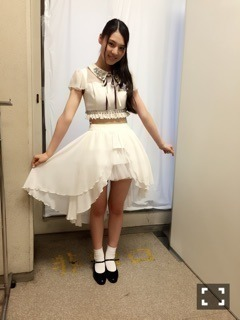
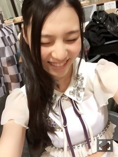
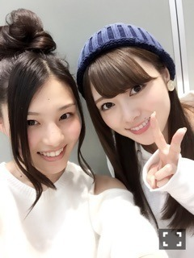
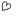

| 2015/04 05 Sun | 相楽伊織 シャンペンサイダー_(. . *) vol.20 |
みなさんこんばんはー！
さがらいおりです！
まずは、
土曜日のアルバムのスペシャル個握
4 部

ガールズルールのへそ出しver
暖かかったし
来て欲しいって言われてたので
着ちゃいました(´,,•ω•,,)♡
髪の毛はサイド巻きポニー

なんでこんなに笑ってたのかな、、
5 部
13 日の金曜日
絢音と純奈の手
あまり黄色を
着たこと無かったから
少し新鮮だった！！
髪型はハーフツイン
そして今日から
11 枚目の握手会が始まりました♪♪
選抜に入った効果もあってか
列もあまり途切れず
たくさんの方が来て下さって
いつも以上に楽しかったです(*^^)v
4 部
乃木どこのバレンタイン企画で
真夏さんに頂いた
ワンピースを着ました♡
髪の毛は巻きおろし
5 部は同じ洋服で
お団子にしました！！

いえーい♡
白石さんと 2 ショット♡
今日は蘭世ちゃんも非常に
可愛かった♡♡
京都だと
遠征して来てくださる方も多いのに
遅い時間で申し訳ないです(>_<)！
もっとたくさんの方に来てもらえるように
頑張ります！！
ありがとうございました♪♪
そして、
土曜日のアルバム個握が
畠中さんの卒業日でした。
畠中さんには
初めてのライブのリハの時に
｢出来ないなら一緒にやろう｣って
言ってくれたことがあって
その時にすごい優しい人だなって思って
それ以来大好きで
畠中さんに勇気づけられた事が
沢山あったから、
だから卒業しちゃうのは
すごい寂しいけど、
またライブとかで
会えたらいいなと思います
i o r i .
